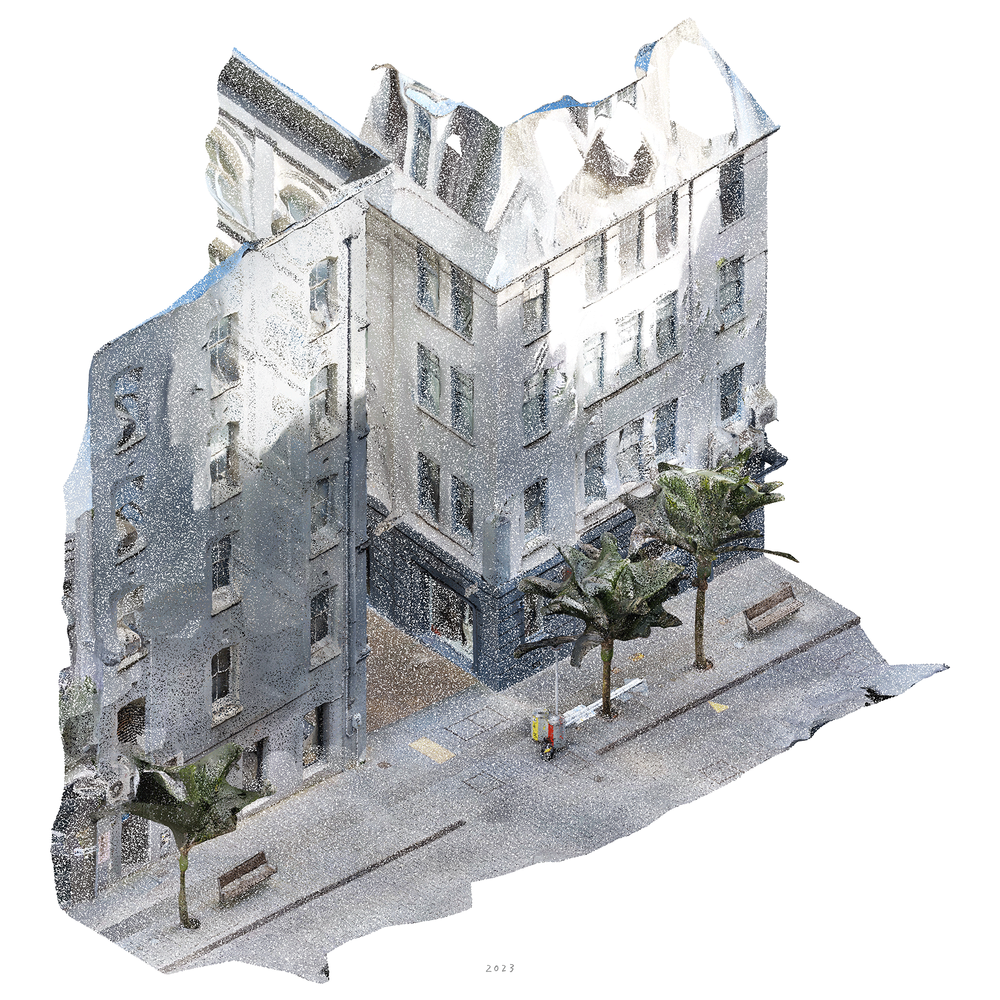

|  |
|
In 2024, our regular grass trimming routine was interrupted by a malfunctioning lawnmower. Unable to fix it, the lawn
remained partially mown for a few months. The grass grew tall around the mown patch and flowers and other plants began
to encroach on the previously homogenous lawn. In the following years we trimmed only small patches, which became
extra rooms within the meadow for picnics and games.
|